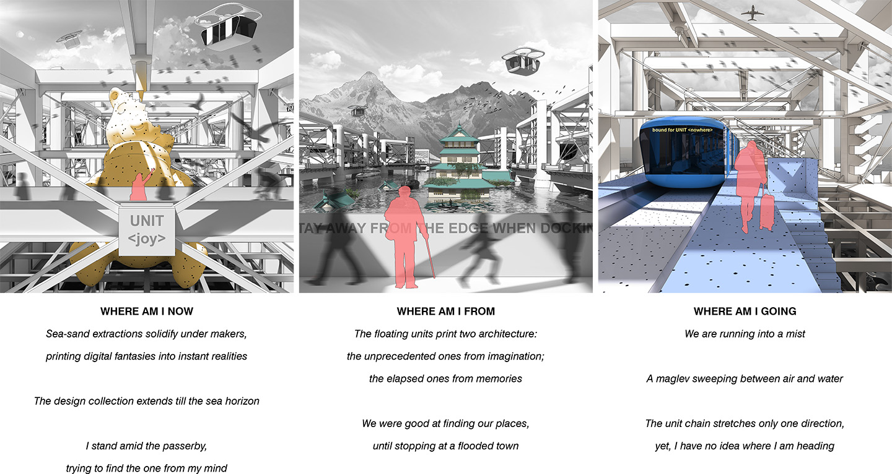

A NOMADIC JOURNEY
Part of my project is to build an interactive journey of an aquatic nomad chasing the flooded homeland of imagination. It will take the form of a
first-person VR experience to be hosted both online through Web-VR and at public events with VR devices available. When entering the scene,
audiences will find themselves on a clear nomad unit. The audiences can navigate the unit in search of extractable materials, print various designs to program their unit,
and dock with other units to shape a nomadic paradise. Depending on the routes of choice, the journey may encounter ruins of insular towns, extreme weathers with tsunamis, and some random paradises with architectural prints
imitating the flooded landmarks of Miami, Lagos, Shanghai, Dhaka, and Tokyo.
While the project is in an early stage of development, you can check out the Web-VR mockup scene below by moving/tapping on your phone
or dragging/ clicking on desktop.
